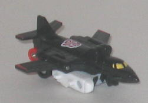 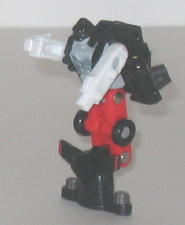
Difficulty of Transformation : Very Easy
Color Scheme : Black, white, light red, and some silver, light gray, dark gunmetal gray, and yellow
Individual Rating : 3.8
Components include
: Air Raid, Fireflight,
Ro-Tor, Silverbolt, Skydive, and Storm Jet (sold seperately)
Individual prices
: $4 (U.S.)
Allegiances
: Autobot
Size
: Micromasters (i.e., slightly
smaller than Minicons)
Overall Rating
: 4.9
(NOTE: These toys aren't really new molds
but basically re-named, re-packaged, and repainted reissues of a formerly
Japanese-exclusive Micromaster set-- Sixwing-- from the early 1990's. Even
though these toys are sold individually, I'm reviewing them on one page
for simplicity's sake.)
 Air
Raid
Air
Raid
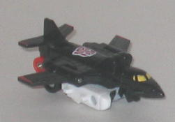
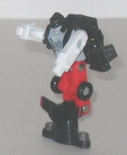
Difficulty of Transformation
: Very
Easy
Color Scheme
: Black, white, light
red, and some silver, light gray, dark gunmetal gray, and yellow
Individual Rating
: 3.8
Air Raid's vehicle mode
is the only black jet of the set. Detailing-wise, it's pretty good for
such a small (and old) toy, with lots of little panels and detailing all
over the place. The black jet mode really helps him stand out from the
others, and this combined with the fact that he's Superion's chest in combined
mode seems to indicate he's the leader of the team. The red wing tips,
white underbelly, and yellow windows in jet mode really help to add some
contrast, as well. However, he has some of the most obvious undercarriage
junk out of all of the Aerialbots, which rather ruins his disguise in this
mode.
Air Raid has a pretty
good robot mode-- for the most part. He's got some nice detailing, especially
on the chest, and his head, chest, and arms all have pretty good proportions.
He does basically wear his entire jet mode as a backpack, but at least
it tucks out of the way nicely. What really bothers moe, however, is that
his lower legs actually jut forward from his upper legs in a very odd manner.
This, combined with the fact that his legs are a bit long proportionally,
make him nearly impossible to stand up by himself in robot mode. (The lower
legs don't really look much like feet, either.) He has the standard Micromaster
articulation of forwards-and-backwards movement at the shoulders, hips,
and knees, though the legs are one piece and cannot be moved individually.
Air Raid comes with
Superion's waist & upper legs piece.
Air Raid, despite the
fact that he's the one with the coolest and most unique color scheme of
the bunch, is one of the worst of the Universe Aerialbots, given his very
odd leg construction and his obvious undercarriage in jet mode.
 Fireflight
Fireflight
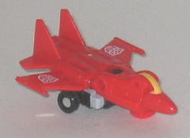
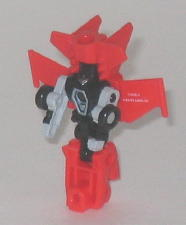
Difficulty of Transformation
: Very
Easy
Color Scheme
: Light red, black,
and some light gray, yellow, and silver
Individual Rating
: 4.8
Fireflight's jet mode
is appropriately colored a light red, and overall has pretty good proportions.
The cockpit is a bit large, however, and it's fairly obvious that the robot
arms are under the wings. Still, there is a pretty good amount of mold
detailing for such a small toy, though a tad more paint detailing could
have been used to break up all that light red (or, conversely, the red
could have been a few shades darker).
Fireflight's robot mode
is pretty straightforward for a Micromaster, basically consisting of his
jet mode with the nosecone used for the feet and the back end used for
the head. It is rather odd to see such a large part of Fireflight's vehicle
mode hanging behind his head while at the same time having comparatively
small legs, but it doesn't affect his balance and he's a really small toy
anyways, so it's not that big of a deal. The wings can either fold behind
his back or stay spread out behind his arms, which is a sort of way to
make him either in the process of flight in robot mode or not. The detailing
on his chest and head is excellent and very crisp-- you can make out every
detail very easily for such a small figure. Fireflight has the standard
Micromaster articulation of back-and-forth motion at the shoulders, hips,
and knees, with the legs being unable to move individually.
Fireflight comes with
Superion's right foot piece.
Fireflight is one of
the better Aerialbots, with a fairly solid jet mode and a decent, if kibble-laden,
robot mode. Still, he does pale in comparison to similar-sized toys made
today, of course.
 Ro-Tor
Ro-Tor
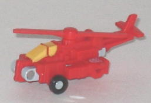
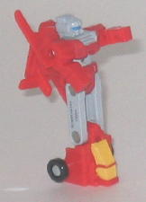
Difficulty of Transformation
: Very
Easy
Color Scheme
: Light red, light gray,
and some yellow, black, and dull sky blue
Individual Rating
: 5.7
Ro-Tor is the odd 'bot
out of the bunch, being a helicopter instead of a jet- or plane-shaped
vehicle. He has a fairly solid vehicle mode, with plenty of mold detailing
and a color scheme that is nearly identical to Fireflight's-- in other
words, a bit more paint detailing or a slightly darker shade of red would've
worked better, but it's not that bad of a scheme. The robot head is fairly
obvious under the tail, however, as are the arms on the sides of the helicopter.
The rotor on top of this mode can spin, albeit it not freely like on some
other helicopter Transformers-- you have to continually push it if you
want it to rotate.
Ro-Tor's robot mode,
while not perfect, is definitely the best of the Aerialbots. His rotor
and tail do hang rather unceremoniously off of his back, but at least they
keep out of the way of movement and don't stick out too much. His upper
legs are rather long proportionally, but otherwise his proportions are
as spot-on as you'd expect from such a small toy, and his beefy arms look
like they could do some damage to boot. He has an excellent head sculpt,
but his chest is somewhat devoid of detailing compared to the other Aerialbots,
oddly enough. Ro-Tor has the same standard Micromaster articulation mentioned
in the previous Aerialbot reviews on this page.
Ro-Tor comes with Superion's
chest piece.
Ro-Tor is the best of
the Aerialbots, with a decent vehicle mode and a pretty nice robot mode,
considering the technology of the time when this mold was first produced.
 Silverbolt
Silverbolt
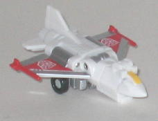
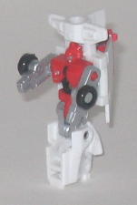
Difficulty of Transformation:
Very
Easy
Color Scheme
: White, silver, light
red, and some yellow and black
Individual Rating
: 5.0
Although his mold is
completely different in terms of colors and detailing, when it comes to
overall design, proportions, and transformation, Silverbolt is identical
to Fireflight, so my comments on Fireflight on those respects also apply
to Silverbolt here. The mold detailing is just as plentiful and crisp on
Silverbolt as it is on Fireflight, as well. Next to Air Raid, however,
Silverbolt has the nicest color scheme of the Aerialbots-- the white and
silver with a lesser amount of light red go together very nicely, and defintely
let the toy live up to its name. I especially like the paint apps used
on his wings, it's a nice design they used there. I'm also a fan of the
fairly broad chest in robot mode, as it gives Silverbolt a "beefy" look
you wouldn't expect from a Transformer with a jet alt mode. Silverbolt
has the standard Micromaster articulation, described earlier on this page.
Silverbolt comes with
Superion's left foot piece.
Silverbolt, like Fireflight,
is one of the better Aerialbots, but he beats Fireflight out in terms of
overall color scheme and paint detailing. My second-favorite of the Universe
Aerialbots.
 Skydive
Skydive
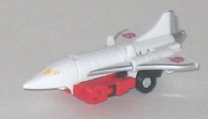
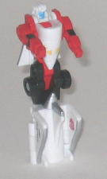
Difficulty of Transformation
: Very
Easy
Color Scheme
: White, light red,
black, and some yellow, dull sky blue, and silver
Individual Rating
: 3.6
Skydive's jet mode looks
pretty good proportions-wise, being one of the few Aerialbots not to have
a rather squat cockpit. There's a fair amount of mold detailing, though
not as much as most of the other Aerialbots, and the overall white and
red color scheme looks a tad plain in this mode without the black that's
visible in robot mode, but it still works and the colors complement each
other fairly well. The silver paint apps on the wing edges also look fairly
nice, too. Out of all of the Aerialbots, however, Skydive has the most
obvious undercarriage junk. I mean, his robot arms are just THERE, right
out of the sides of the jet, without being covered up by the wings or anything.
And given that they're light red as opposed to the white of the rest of
the vehicle mode, this makes them stand out even more than they otherwise
would have.
Skydive's robot mode
looks fairly good from the waist up, with good proportions and a well-detailed
face with a sky blue face to given him another color. His leg proportions
are completely wonky, though, even worse than his teammate Air Raid's.
Not only are they WAY too long proportionally, but they have the same problem
as Air Raid, what with the lower legs actually sticking out farther than
the upper legs and all. At least Skydive can stand much easier than Air
Raid due to his bulkier feet, however. Skydive has the same standard Micromaster
articulation that the other Universe Aerialbots have.
Skydive comes with Superion's
head and left fist pieces.
Skydive is definitely
the weakest of the Universe Aerialbots, with an oddly proportioned robot
mode and some very obvious robot extras in jet mode. Honestly, even with
the comparatively limited toy technology they had at their disposal in
the early '90s when this mold was made, they could have done better than
this.
 Storm
Jet
Storm
Jet
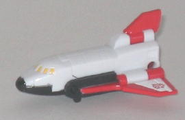
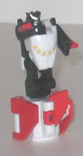
Difficulty of Transformation
: Very
Easy
Color Scheme
: White, black, light
red, and some yellow and silver
Individual Rating
: 5.3
Storm Jet has the best
vehicle mode of the bunch, with his space shuttle alt mode having no robot
extras whatsoever, not even undercarriage junk. (Why he's named Storm Jet
when he's a SHUTTLE, though, is beyond me.) His color scheme is nearly
identical to Skydive's, but with more black and red to help out the contrast
with the white a bit more, so it looks a bit better. The paint apps on
the wings look especially cool for such a small figure. His mold detailing
is fairly sparse compared to the other Aerialbots, however.
Storm Jet's robot mode
is one of the best of the bunch, with pretty solid proportions all around
and few vehicle extras. The only real extras are his various wings on his
lower legs, and although they make the lower legs look rather odd, they
at least fold inwards and out of the way. I also love the head sculpt,
being as crisp as it is for such a small toy, though the hands are pretty
flat and two-dimensional. Storm Jet has the standard Micromaster articulation
that all the other Universe Aerialbots have.
Storm Jet comes with
Superion's gun and right fist pieces.
Storm Jet is the second-best
Aerialbot, second only to Ro-Tor. He's got a pretty much flawless vehicle
mode, and though his lower legs look pretty odd, otherwise his robot mode
looks fairly good for such an old tiny toy as well.
 Superion
Superion
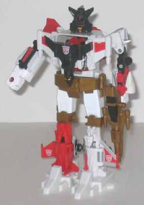
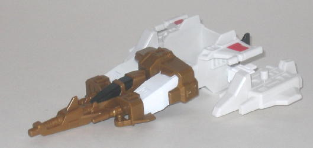
Difficulty of Transformation
: Medium
Individual Rating
: 6.3
The jet form, made from
the combined "extra" pieces of the individual Micromaster Aerialbots, is
pretty much identical in terms of its design when compared to the jet form
of the
Micromaster Protectobots
, so my comments
for their jet form carry over to this toy as well. The overall color scheme
is very nice, however, and very appropriate for a jet especially. I especially
love the gold plastic used, as it helps to add an additional color to the
mix that the individual Aerialbots don't have. I wish there was a little
more red prevalent in the jet form, but that's a minor quibble.
In the combined form,
Air Raid forms the chest, Storm Jet the right arm, Skydive the left arm,
Fireflight the right leg, Silverbolt the left leg, and Ro-Tor just sticks
into the back without really contributing anything, poor guy. Fireflight
and Silverbolt make excellent legs, though Skydive and Storm Jet make fairly
skinny arms, especially Skydive. Air Raid looks nice as the front of the
chest, giving nice contrast to the surrounding colors and essentially being
a jet stuck on Superion's chest, but because he's slimmer than most other
Micromaster components that form the chests of their gestalt mode there's
quite a few visible gaps that you can see through when you look at the
chest from a frontal or diagonal view. Ro-Tor kinda sticks out from the
front of the chest in a rather odd manner, but this is typical of the Micromaster
gestalt construction as the back component tends to be a fifth (or, rather,
sixth) wheel anyways. Because his extra connecting pieces are identical
(except for the head and hands), Superion's overall construction is also
pretty much the same as Micromaster Defensor as well. However, Superion
excels slightly more in one major area where Defensor doesn't; articulation.
Superion stil has the pretty limited side-to-side movement at the head
and front-to-back movement at the shoulders that Defensor does, but because
of the way the Aerialbots that form his legs are constructed, he can actually
bend his legs backward at a point slightly below the knees as well, so
he's the one and only Micromaster gestalt that can actually "walk". I really
like Superion's head sculpt, as it bears some resemblance the original
Superion without being a carbon copy of it. The overall color combo works
even better here than it does in jet mode, with all fo the colors coming
together wonderfully and none of them clashing or being overly dominant
in comparison to the others.
Although he still pales in comparison to toys made in the past decade, Micromaster Superion has some excellent colors, and his components have far fewer pieces of kibble than the other Micromaster combiner components. Overall I'd say he's the second-best of the Universe Micromaster gestalts, behind Devastator , though this is admittedly faint praise.
No Stats
Review by Beastbot
(NOTE: In addition to being an "official" KB Toys exclusive, the Micromaster Aerialbots were also spotted fairly widely at Big Lots discount stores, albeit for the same price or slightly more expensive than the were at the KB Toys stores.)